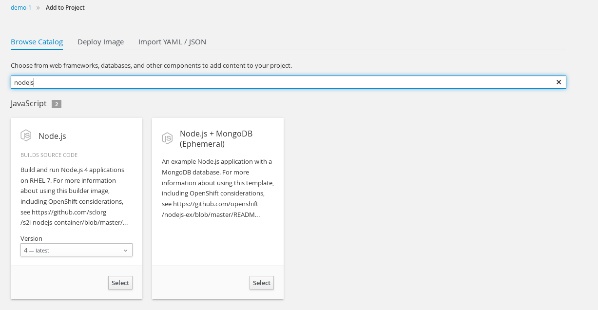
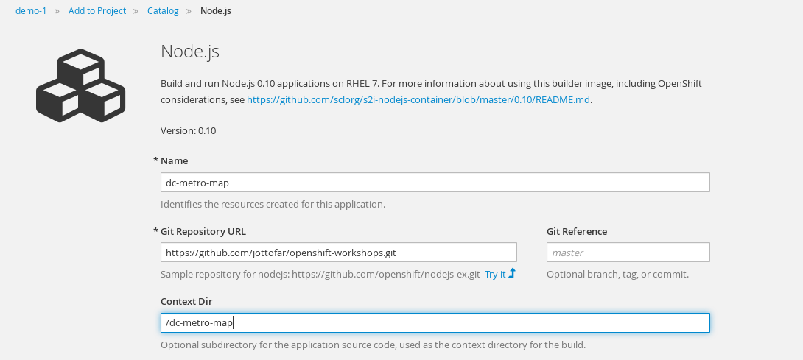
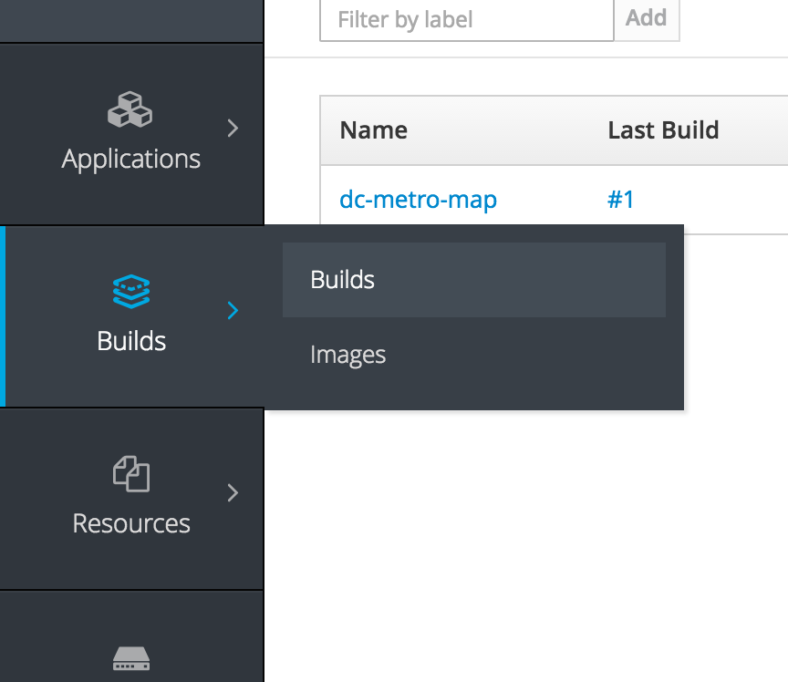
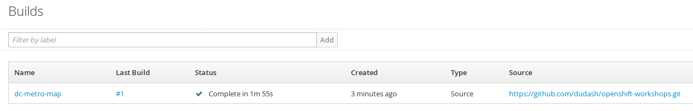
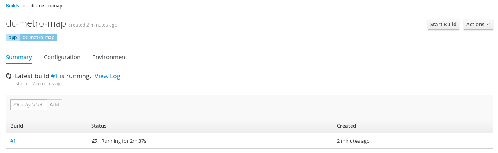
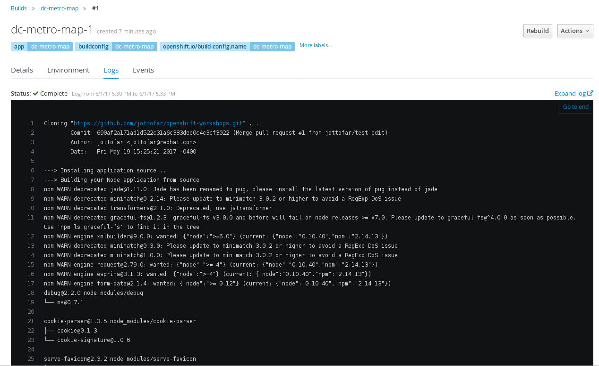
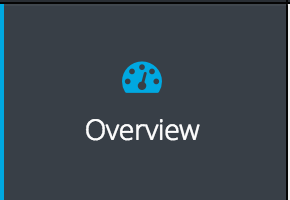
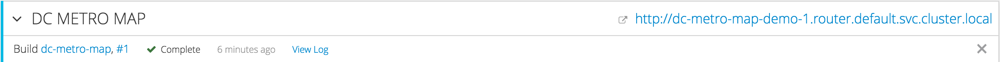
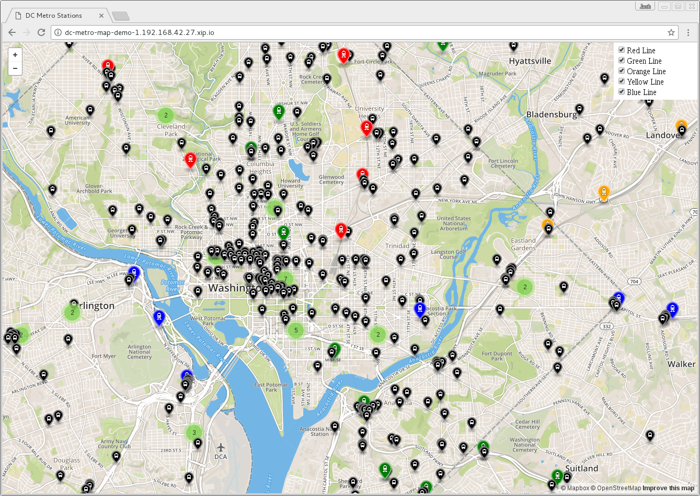

Source to Image (S2I)
One of the useful components of OpenShift is its source-to-image capability. S2I is a framework that makes it easy to turn your source code into runnable images. The main advantage of using S2I for building reproducible docker images is the ease of use for developers. You'll see just how simple it can be in this lab.
Let's build a node.js web server using S2I
We can do this either via the command line or the web console. You decide which you'd rather do and follow the steps below.
Goto the terminal and type the following:
$ oc new-app --name=dc-metro-map https://github.com/RedHatGov/openshift-workshops.git --context-dir=dc-metro-map
$ oc expose service dc-metro-map
When using the CLI, OpenShift automatically detects the source code type and select the nodejs builder image.
Click "Add to Project"

Click "Browse Catalog" and filter for nodejs. Select Node.js version 0.10 from the Version drop down menu and then click "Select"
Fill out the boxes to look as follows:
Notes: You will need to click to expand the "advanced options"
The github repository URL is: https://github.com/RedHatGov/openshift-workshops.git
The github context-dir is: dc-metro-map
Scroll to the bottom and click "Create"
Check out the build details
We can see the details of what the S2I builder did. This can be helpful to diagnose issues if builds are failing.
TIP: For a node.js app, running "npm shrinkwrap" is a good practice to perform on your branch before releasing changes that you plan to build/deploy as an image with S2I
Goto the terminal and type the following:
$ oc get builds
Note the name of your build from the above command output and use it to see the logs with:
$ oc logs builds/[BUILD_NAME]
The console will print out the full log for your build. Note, you could pipe this to more or less for easier viewing in the CLI.
Click on "Builds" and then click on "Builds"
Click on the "dc-metro-map" link
Click on the "View Log" tab to see the details of your latest build
You should see a log output similar to the one below:

See the app in action
Let's see this app in action!
Goto the terminal and type the following:
$ oc get routes
Copy the HOST/PORT and paste into your favorite web browser:
Click on Overview
Click the URL that is listed in the dc-metro-map header
The app should look like this in your web browser:

Clicking the checkboxes will toggle on/off the individual metro stations on each colored line. A numbered icon indicates there is more than one metro station in that area and they have been consolidated - click the number or zoom in to see more.
Summary
In this lab we deployed a sample application using source to image. This process built our code and wrapped that in a docker image. It then deployed the image into our OpenShift platform in a pod and exposed a route to allow outside web traffic to access our application. In the next lab we will look at some details of this app's deployment and make some changes to see how OpenShift can help to automate our development processes. More information about creating new applications can be found here.